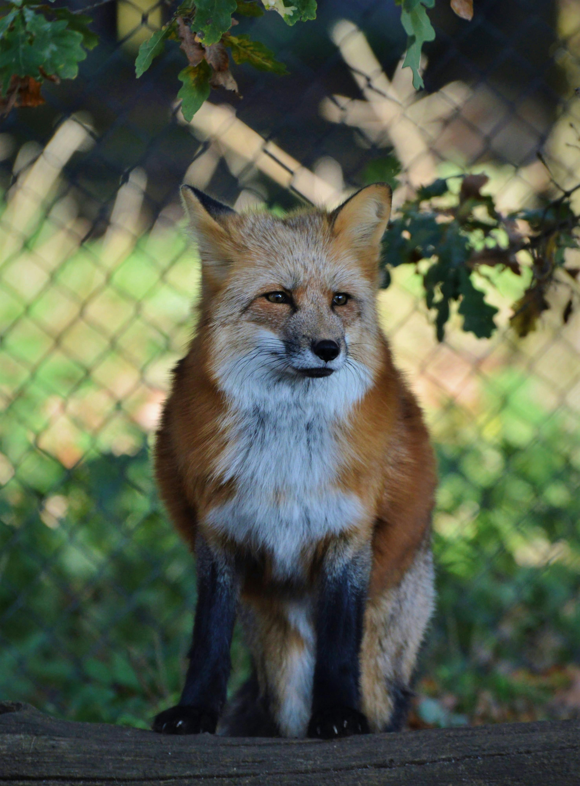

What exactly does sponsorship entail?
A resident animal will only have one primary sponsor. They may have up to three co sponsors.
We ask that you please commit to our 6-month term of sponsorship.
Sponsorship donations will be due between the 1st and 5th of each month, and need to be set up as recurring, monthly donations through our PayPal. (Once you submit the form below, we will send you an email once there is an open spot to sponsor your desired resident, and a link to set up the recurring donation.)
In addition to helping the life of one of these beautiful creatures, and helping our rescue thrive, sponsors:
Are mentioned when your sponsored resident is posted on Instagram
Can contact us at any time to ask about your sponsored resident
Can schedule a private tour of our facility (to see the life you're helping in person!). Tours usually last approximately 30-60 minutes.
Please note that, per state regulations, we cannot allow members of the public to have physical contact with any of our residents
Primary Sponsors pay:
For foxes: Monthly, recurring sponsor donation of $75.00
For wolfdogs: Monthly, recurring sponsor donation of $100.00
For raccoons: Monthly, recurring sponsor donation of $75.00
and receive a special, physical gift - at least once per year - featuring your sponsored resident
Secondary Sponsors pay:
For foxes: monthly, recurring sponsor donation of $25.00
For wolfdogs: monthly, recurring sponsor donation of $50.00
For raccoons: monthly, recurring sponsor donation of $25.00
If you ever want to send extra toys, enrichment activites, or a special gift, feel free! Most of our foxes love high-quality ingredient dog treats and stuffing-less and/or durable squeaky toys. You can send items here:
Arctic Fox Daily Wildlife Rescue
PO Box 300
Williamson, NY 14589
If you are interested in becoming a sponsor, please submit the form below. Please note which animal you are interested in sponsoring - or note if you don't have a preference - in the "Name of Resident You'd Like to Sponsor" portion of the form.
We will then contact you via IG direct message or email to let you know when/if a sponsor position is/becomes available.
Currently, to view all of our residents, please check out our social media pages, in case our website is not as up to date! THANK YOU!